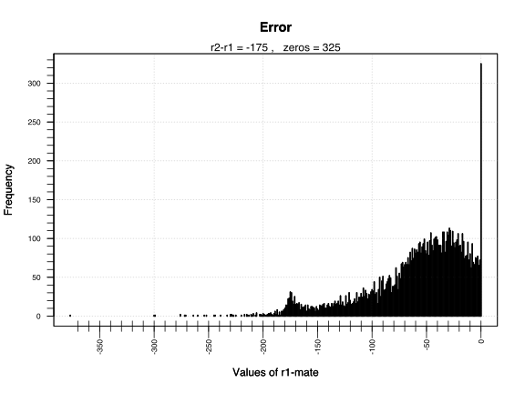
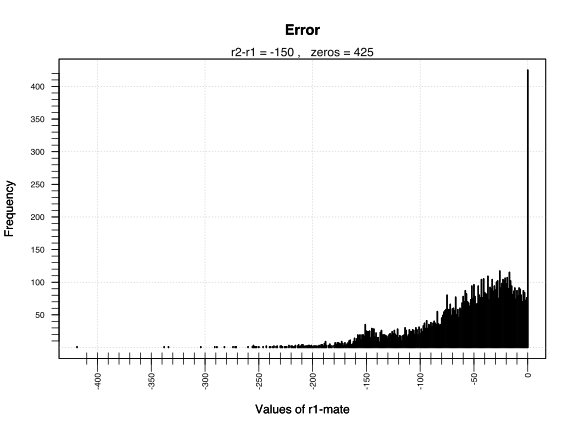
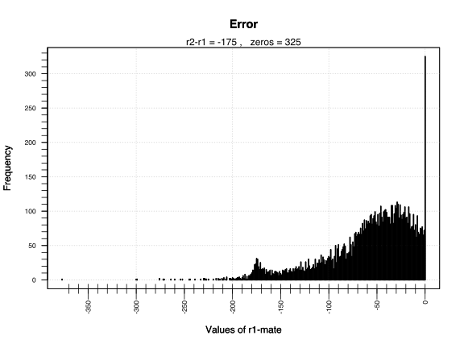
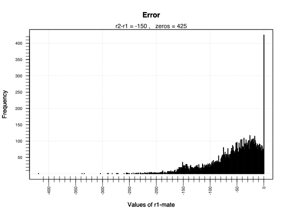
 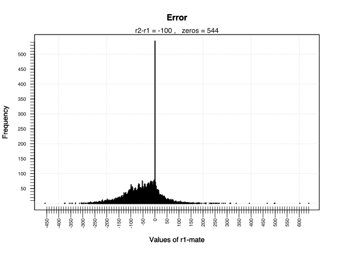
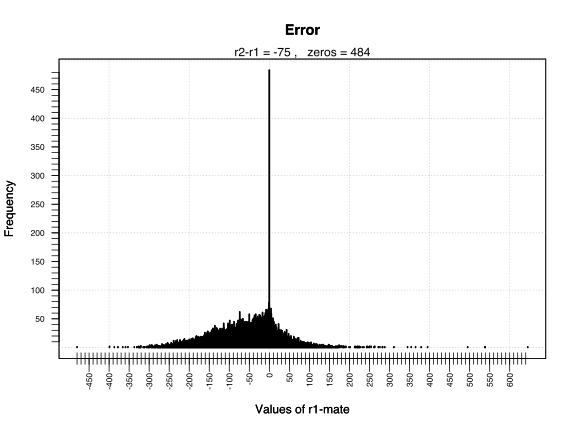
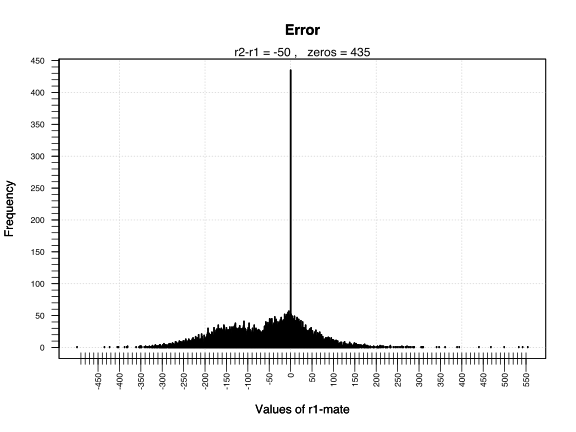
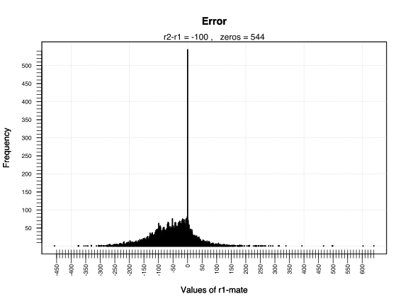
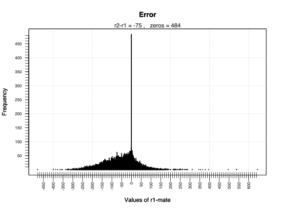
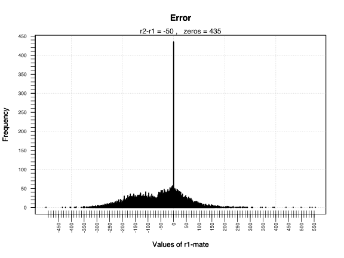
In the following lines I summarize some results obtained after testing the alignment position of four SAM files whose corresponding FASTQ files are part of the MPEG dataset. The FASTQ files are the paired-end human samples:
The SAM files under consideration are shown at the bottom of the following figure.
To run the tests on the content of such files some preprocessing was needed. It is described next.
The general workflow for preparing the files is the following:
Selection of all concordant reads with perfect match to the reference. A single entry is taken for every paired read that fits this criteria.
Extraction of relevant fields in the SAM file. Each entry now contains five values: the read name, position of the read, position of the mate, genome sequence and quality values. At this point the file reduces to approximately half of its initial size.
Shuffling of the entries.
Random sampling and selection of position fields. Each sample holds 100k entries each composed of two values: the position of the read and the position of its mate.
Data framing. The samples are turned into matrices to be manipulated in the R environment.
A sample is a matrix whose rows represent each a paired read. For each row four values are computed:
The distance between the read (r1) and its mate (r2). This is the difference of their positions and its value can be positive or negative. It is positive when r1 is aligned ahead of r2. If the difference is negative then r1 is aligned behind r2.
An artificial value for r2, named R2. It is obtained by adding to r1 the position that is observed the most in the sample (mode).
An artificial mate for r1 based on comparing R2 to r2. The value R2 is compared against all values of r2 in the sample to find its closest match. The closest match is computed by taking the absolute value of the difference between R2 and r2. The value found as closest match is the artificial mate and its entry is removed from the list of r2 values.
The distance between r2 and its artificial mate. This is the difference of their positions.
After processing, each sample looks like the matrix in the figure below. The first 13 rows of the matrix are shown.
The distribution of the observed values are shown in the following figures.
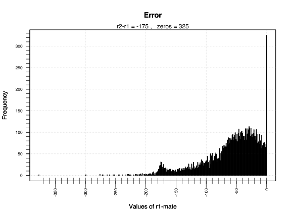
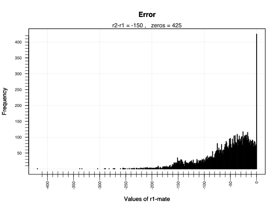
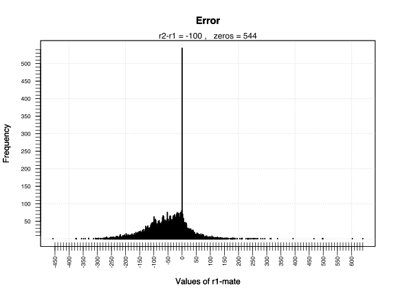
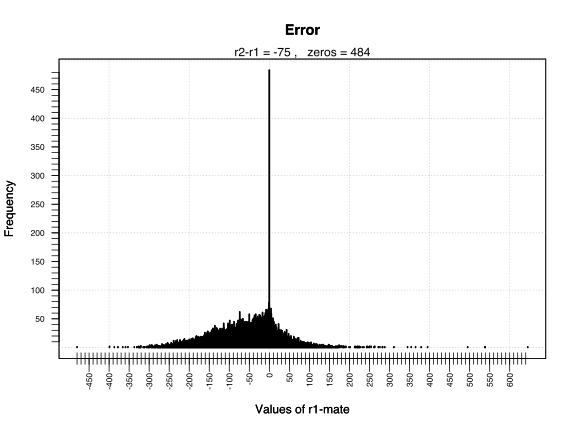
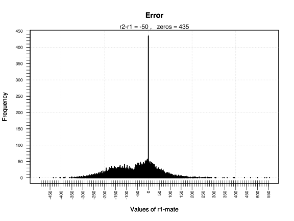